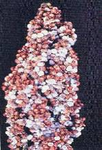
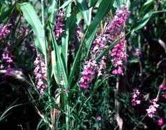

SORGHUM :: MAJOR DISEASE :: HEAD MOULD / GRAIN MOULD / HEAD BLIGHT
Head mould/Grain mould/Head blight
More than thirty two genera of fungi were found to occur on the grains of sorghum.
Symptoms
If rains occur during the flowering and grain filling stages, severe grain moulding occusr. The most frequently occurring genera are Fusarium, Curvularia, Alternaria, Aspergillusand Phoma. Fusarium semitectumand F.moniliforme develop a fluffy white or pinkish coloration. C. lunatacolours the grain black. Symptom varies depending upon the organism involved and the degree of infection.
|  |
Symptoms |
Favourable Conditions
- Wet weather following the flowering favors grain mould development.
- The longer the wet period the greater the mould development.
- Compact ear heads are highly susceptible.
Disease cycle
The fungi mainly spread through air-borne conidia. The fungi survive as parasites as well as saprophytes in the infected plant debris.
Management
- Adjust the sowing time.
- Spray any one of the following fungicides in case of intermittent rainfall during earhead emergence, a week later and during milky stage.
- Mancozeb 1 kg/ha or Captan 1 kg + Aureofungin-sol 100 g/ha.
Phanerogamic parasite - Striga asiatica and Striga densiflora
It is a partial root parasite and occurs mainly in the rainfed sorghum. It is a small plant with bright green leaves, grows up to a height of 15-30 cm. The plants occur in clusters of 10-20/host plant. S. asiatica produces red to pink flowers while. S. densiflora produces white flowers. Each fruit contains minute seeds in abundance which survives in the soil for several years.
The root exudates of sorghum stimulate the seeds of the parasite to germinate. The parasite then slowly attaches to the root of the host by haustoria and grows below the soil surface producing underground stems and roots for about 1-2 months. The parasite grows faster and appears at the base of the plant. Severe infestation causes yellowing and wilting of the host leaves. The infected plants are stunted in growth and may die prior to seed setting.
|  |
Symptoms |
Management
- Regular weeding and intercultural operation during early stages of parasite growth.
- Spray Fernoxone (sodium salt of 2, 4-D) at 450g /500 litre of water.